Fc Barcelona
¡El barcelona es el único que ha conseguido el máximo título continental en 5 deportes diferentes.
juega en la Liga Santander de la Liga española y es también conocido popularmente como Barça,y uno de los tres únicos que siempre ha jugado en la máxima categoría
El escudo del club que aparece en el uniforme de los jugadores se divide en tres partes: en las dos superiores aparece la bandera de la ciudad de Barcelona con la Cruz de Sant Jordi y la señera catalana, en la otra, un balón de fútbol sobre los colores azulgrana.
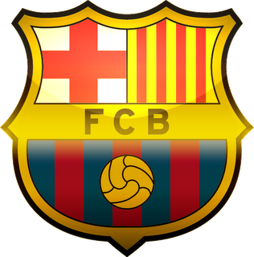
.jpg)
El Camp nou
.jpg)
El Camp Nou ha sido objeto de diversas remodelaciones. La primera tuvo lugar en 1981, en que se amplió el estadio con motivo de la celebración del Mundial 82 que se disputó en España. El aforo del estadio se situó entonces en 120.000 espectadores.
La necesidad de construir un nuevo estadio surgió a principios de los años 1950, con la eclosión de la difusión del fútbol en España y la llegada al club en 1951 de Ladislao Kubala.
Integrantes del el club blaugrana
Ter Stegen
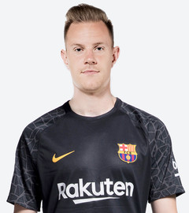
Ter Stegen ha competido al máximo nivel desde los 19 años. Portero sobrio y con un gran dominio del juego de pies, el alemán se ha convertido ya en una realidad de presente y futuro
Pique
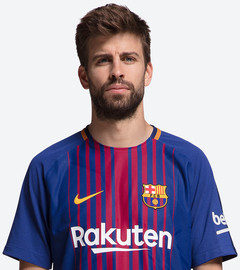
Considerado uno de los mejores centrales del mundo, Gerard Piqué reúne carácter, clase y un poderoso juego aéreo, características que lo han convertido en pieza fundamental en el Barça
Ivan Rakitick
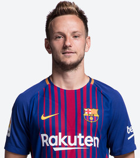
Referente en la selección de Croacia y en el FC Barcelona, Ivan Rakitic es un centrocampista que aporta trabajo, kilómetros, asistencias y goles, como el que marcó en la final de Berlín de 2015
Sergio Busquets
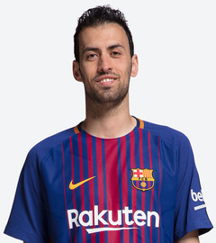
Sergio Busquets es probablemente el mejor mediocentro defensivo del mundo. Recuperador por excelencia, destaca por su técnica y su brillante lectura táctica
Andres Iniesta
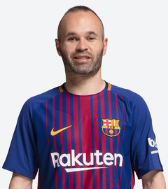
El capitán del primer equipo, Andrés Iniesta, es uno de los jugadores que más partidos han disputado con el Barça a lo largo de su historia. Humilde y elegante, es también de los mejores futbolistas del planeta
Luis Suarez
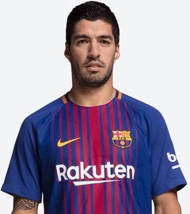
Luis Suárez es garantía de goles. Realizador y también asistente, el ‘9’ del Barça es un delantero con carácter, luchador y ganador
Lionel Messi
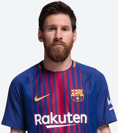
Leo Messi es el mejor jugador del mundo. Superdotado técnicamente, reúne todos los atributos necesarios para ser el número uno: sangre fría, velocidad, generosidad, desequilibrio y gol,Messi es un jugador excelente, sensacional, único. Se trata de un futbolista muy creativo, con una enorme técnica individual que le permite desbordar a los rivales con facilidad. Es un jugador zurdo versátil que puede jugar tanto de centrocampista por las dos bandas como en posiciones de delantero puro, aunque la de extremo derecho es su posición más natural.
Javier Macherano
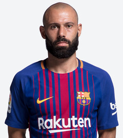
Javier Mascherano, uno de los capitanes del primer equipo desde 2014, es un líder dentro y fuera de los terrenos de juego. Su fútbol es una mezcla de pasión y táctica
Sergi Roberto
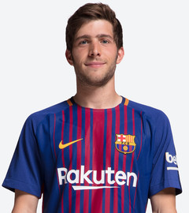
Con 14 años Sergi Roberto abandonó Reus para pisar con fuerza en la Masia del FC Barcelona. Procedente del Nàstic de Tarragona, el centrocampista se consolidó etapa tras etapa hasta convertirse en una pieza fija en el esquema del filial dirigido por Luis Enrique, equipo con el que debutó la temporada 2009/10.
Jordi Alba
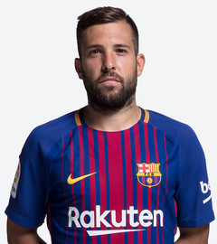
Rápido como pocos, Jordi Alba destaca por ser uno de los laterales izquierdos más hábiles y ofensivos del mundo
Andres Gomez
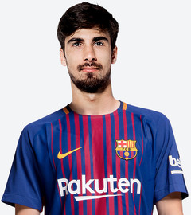
Ambidiestro y polivalente, André Gomes es un centrocampista ofensivo que aporta altura, visión de juego y llegada desde la segunda línea
Umtiti
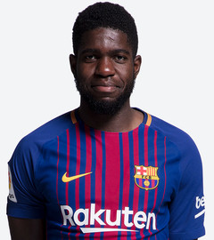
Samuel Umtiti llegó al FC Barcelona para reforzar la línea defensiva del equipo de Luis Enrique. El francés de origen camerunés aterrizó en Barcelona el día 14 de julio del año 2016 procedente del Olympique de Lyon, donde fue un habitual en los onces iniciales durante las temporadas previas a su incorporación al Barça.
Douglas
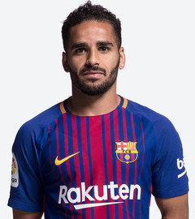
Azulgrana desde 2014, Douglas es un lateral derecho de gran recorrido y con una enorme experiencia en Brasil, donde disputó 212 partidos